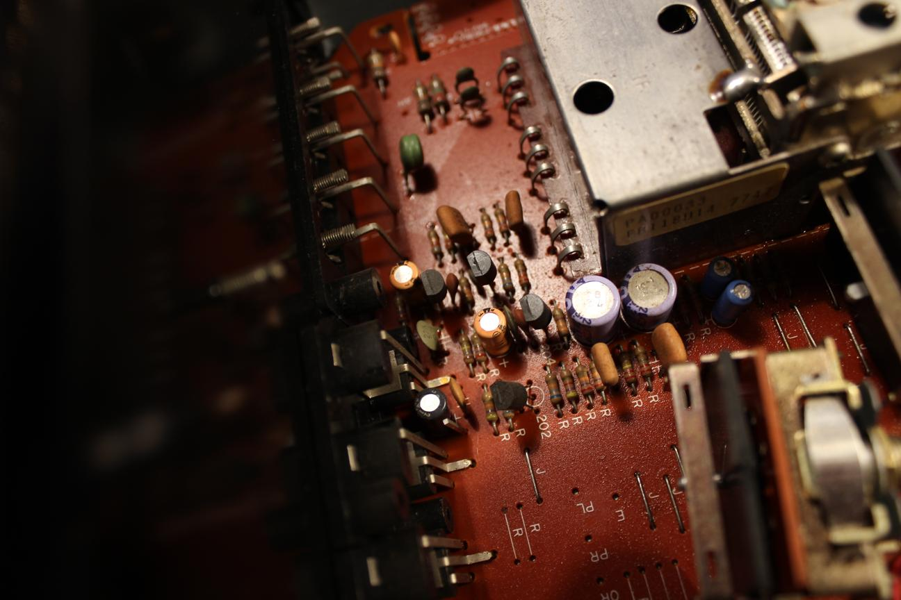

Yamaha CR-420

The owner of this receiver told me that the left channel was not working. At first I thought it would be some burned out transistors but I didn't find any evidence of that so I decided to hook it up to a dummy load and signal generator to look at the output.
With the output loaded, I saw no problems on the scope until I switched the input to the phono channel. The left side disapeared. Notice on this circuit board how the potentiometers are mechanically coupled to the controls through universal joints.

I started to trace the phono preamp to see where the signal disapeared.
As I was probing the board, I noticed a very thin crack on one of the traces. The crack was right next to a solder joint for the PCB mounted potentiometer. Mounting pots like this is a bad idea for stereo controls. They transfer the torque from the knob directly to the brittle PCB causing stress and cracks.
To repair the crack, I removed the enamel coating from the traces along the length of the crack.
Then I added flux to the exposed copper and filled in the crack with solder.
I found another one next to another potentiometer and fixed it the same way.
Traces repaired
The left channel was back now and the amp was working as it should. A quick fix this time.